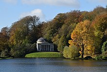

Architecture

Architecture (Latin architectura, from the Greek ἀρχιτέκτων arkhitekton "architect", from ἀρχι- "chief" and τέκτων "builder") is both the process and the product of planning, designing, and constructing buildings and other physical structures. Architectural works, in the material form of buildings, are often perceived as cultural symbols and as works of art. Historical civilizations are often identified with their surviving architectural achievements.
"Architecture" can mean:
- A general term to describe buildings and other physical structures.
- The art and science of designing buildings and (some) nonbuilding structures.
- The style of design and method of construction of buildings and other physical structures.
- A unifying or coherent form or structure
- Knowledge of art, science, technology, and humanity.
- The design activity of the architect, from the macro-level (urban design, landscape architecture) to the micro-level (construction details and furniture). The practice of the architect, where architecture means offering or rendering professional services in connection with the design and construction of buildings, or built environments.
Theory of architecture
Historic treatises
The earliest surviving written work on the subject of architecture is De architectura, by the Roman architect Vitruvius in the early 1st century AD. According to Vitruvius, a good building should satisfy the three principles of firmitas, utilitas, venustas, commonly known by the original translation – firmness, commodity and delight. An equivalent in modern English would be:
- Durability – a building should stand up robustly and remain in good condition.
- Utility – it should be suitable for the purposes for which it is used.
- Beauty – it should be aesthetically pleasing.
According to Vitruvius, the architect should strive to fulfill each of these three attributes as well as possible. Leon Battista Alberti, who elaborates on the ideas of Vitruvius in his treatise, De Re Aedificatoria, saw beauty primarily as a matter of proportion, although ornament also played a part. For Alberti, the rules of proportion were those that governed the idealized human figure, the Golden mean.
The most important aspect of beauty was, therefore, an inherent part of an object, rather than something applied superficially, and was based on universal, recognizable truths. The notion of style in the arts was not developed until the 16th century, with the writing of Vasari: by the 18th century, his Lives of the Most Excellent Painters.
History of architecture
Origins and vernacular architecture
Building first evolved out of the dynamics between needs (shelter, security, worship, etc.) and means (available building materials and attendant skills). As human cultures developed and knowledge began to be formalized through oral traditions and practices, building became a craft, and "architecture" is the name given to the most highly formalized and respected versions of that craft. It is widely assumed that architectural success was the product of a process of trial and error, with progressively less trial and more replication as the results of the process proved increasingly satisfactory. What is termed vernacular architecture continues to be produced in many parts of the world. Many architects resisted modernism, finding it devoid of the decorative richness of historical styles. As the first generation of modernists began to die after World War II, the second generation of architects including Paul Rudolph, Marcel Breuer, and Eero Saarinen tried to expand the aesthetics of modernism with Brutalism, buildings with expressive sculpture façades made of unfinished concrete. But an even younger postwar generation critiqued modernism and Brutalism for being too austere, standardized, monotone, and not taking into account the richness of human experience offered in historical buildings across time and in different places and cultures.
Types of architecture
